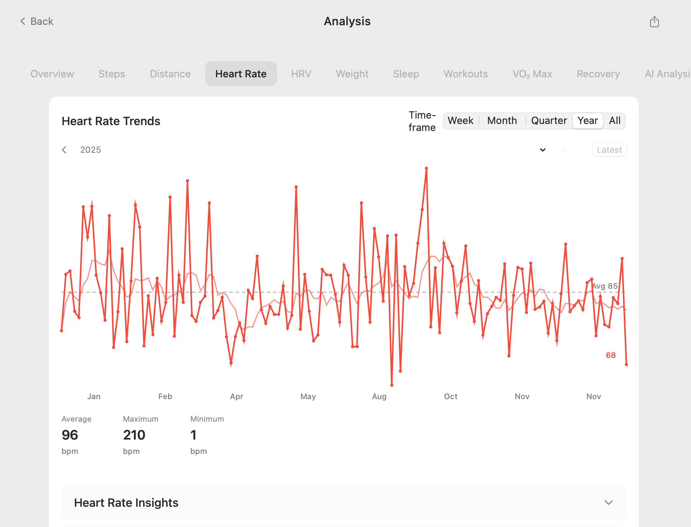

Analyze Apple Health Data With AI on Mac
You've successfully managed to export your Apple Health data. You have a clean CSV or JSON file sitting on your computer. Now what? Raw data is powerful, but its true value is unlocked through analysis. This guide shows you how to analyze your Apple Health data on a Mac, turning years of records into meaningful charts, trends, and AI-powered insights.
From Data Points to Personal Insights
The Apple Health app provides basic graphs, but they often lack context and the ability to overlay different data types. True analysis means answering complex questions like:
- "How does my sleep duration over the last month correlate with my resting heart rate?"
- "Is my cardio fitness (VO2 Max) trending up or down over the past year?"
- "What were my average heart rate recovery stats across all my HIIT workouts in the last quarter?"
Answering these questions requires tools more powerful than the mobile app. It requires a dedicated Mac health data analysis workflow.
Introducing "AI Analyzer" for Mac
Our free "AI Analyzer" tool is designed to be the brain of your personal health data workflow. Built with powerful data science libraries in Python, it takes the clean data file from our "Health Data Export" iOS app and automatically gets to work.
Key Features:
- Automatic Dashboards: Upon loading your data, the tool generates interactive charts for key metrics like activity, heart rate, sleep, and workouts.
- AI-Powered Summaries: Leveraging Large Language Models (LLMs), the analyzer provides natural language summaries of your trends.
- Correlation Matrix: Discover relationships between different health metrics you might not have noticed.
- Workout Deep Dives: Get detailed performance analysis for your workouts, including heart rate zones and recovery times.
- Privacy-Focused: Runs entirely locally on your Mac. Your health data is never uploaded.
Who is This Analysis Workflow For?
- The Quantified Self: For those who are passionate about self-improvement and want to use data to optimize their health, fitness, and wellness.
- Athletes: To move beyond basic app metrics and perform a "post-season" review of training data.
- The "Health-Curious": For anyone who wants a "State of the Union" for their personal health, presented in a clear and understandable way.
- Technical Users: For developers and data scientists who can use the tool's output as a starting point for even more advanced, custom analysis in Python or R.
If you have ever had to convert Apple Health XML to CSV, you know the pain of data preparation. This workflow is designed to make that a distant memory, focusing your time on insight, not cleanup.
Your Data, Your Discoveries
The goal of Apple Health AI analysis isn't just to create fancy charts; it's to facilitate discovery. It helps you connect the dots between your daily habits and your long-term health outcomes.